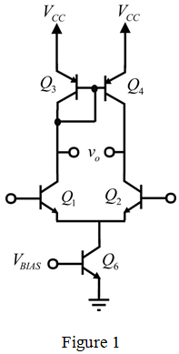

Step 1:
(a)
Refer to Figure12.40 (a) in the textbook for the differential input stage with current mirror load. The input common mode range provides the range of values for which the input stage remains in the active state.
In order to determine the input common mode range of the differential input stage with current mirror load, determine the minimum and maximum value of the input common mode range.
Determine the minimum value or low end  of the input common mode range. The minimum value or low end of the input common mode range is determined by the saturation of the transistors
of the input common mode range. The minimum value or low end of the input common mode range is determined by the saturation of the transistors  and
and  .
.
In the circuit the transistor  is collector feedback- biased. Since the base terminal and the collector terminal of the transistor are shorted, the voltage developed at the base of the transistor
is collector feedback- biased. Since the base terminal and the collector terminal of the transistor are shorted, the voltage developed at the base of the transistor  appears at the collector terminal of the transistor. Hence, the voltage at the collector terminal of the transistor
appears at the collector terminal of the transistor. Hence, the voltage at the collector terminal of the transistor  is . Consequently, the collector of the transistor
is . Consequently, the collector of the transistor  is at the same voltage of .
is at the same voltage of .
Step 2:
In order to keep the  transistor
transistor  in saturation, the collector voltage should be higher than the base voltage and to keep it in forward active state the voltage difference between the collector and the base should be .
in saturation, the collector voltage should be higher than the base voltage and to keep it in forward active state the voltage difference between the collector and the base should be .

The voltage at the collector of the transistor  cannot fall beyond , otherwise it drives the transistor into the cutoff mode.
cannot fall beyond , otherwise it drives the transistor into the cutoff mode.
Thus, the minimum value or low end value,  of the input common mode range is,
of the input common mode range is,
Step 3:
From the calculation of  , the input common mode range observe that the minimum voltage that can be applied to the base of the transistor
, the input common mode range observe that the minimum voltage that can be applied to the base of the transistor  is .
is .
Obtain the upper end  of the input common mode range by considering the minimum voltage as well the voltage .
of the input common mode range by considering the minimum voltage as well the voltage .
Determine the maximum value or upper end  of the input common mode range using the following relation:
of the input common mode range using the following relation:
Substitute the value  for ,
for ,  for
for  and for in the expression for maximum value or upper end maximum value or upper end
and for in the expression for maximum value or upper end maximum value or upper end 
 .
.
Thus, the value of the minimum value of the input common mode range  is and the value of the maximum value of the input common mode range
is and the value of the maximum value of the input common mode range is .
is .
Hence, the range of the input common mode range is .
Step 4:
(b)
Draw the complementary version of the circuit in Figure 12.40(a) in the text book.

The base terminal and the collector terminal of the transistor in the circuit are short-circuited. The voltage developed at the base of the transistor  appears at the collector terminal of the transistor. Hence, the voltage at the collector terminal of the transistor
appears at the collector terminal of the transistor. Hence, the voltage at the collector terminal of the transistor  is,
is,
Step 5:
Consequently, the collector of the transistor

is at the same voltage . In order to keep the

transistor

in saturation, the collector voltage should be higher than the base voltage and to keep it in forward active state the minimum voltage that has to be applied to the transistor

is .
Thus, the minimum value or low end value,  of the input common mode range is
of the input common mode range is
.
Determine the maximum value or upper end of the input common mode range using the following formula.

Substitute for  and for .
and for .
Thus, the value of the minimum value of the input common mode range  is and the value of the maximum value of the input common mode range
is and the value of the maximum value of the input common mode range is
is  .
.
Hence, the range of the input common mode range is .